01钩子 / 问题
先卖账号机会，再卖教程
开场声称女性独居 Vlog 两个月涨粉十万、商业合作场景多，随后承诺用 AI 三步复现。观众同时要处理涨粉和制作两个价值承诺。
AI 可以把治愈独居 Vlog 拆成脚本、生图、剪辑三步，同时通过更多生活场景为后续商业植入预留空间。
这条视频同时讲账号机会和生产教程，信息很完整，却混合了涨粉、广告植入、提示词、角色一致性和剪辑多个目标；单条认知负荷明显高于一个痛点一个答案。
AI 可以把治愈独居 Vlog 拆成脚本、生图、剪辑三步，同时通过更多生活场景为后续商业植入预留空间。
不是复述内容，而是标出每一段承担的叙事任务、观众问题和画面证据。
开场声称女性独居 Vlog 两个月涨粉十万、商业合作场景多，随后承诺用 AI 三步复现。观众同时要处理涨粉和制作两个价值承诺。
把提示词交给 AI，要求生成 Vlog 分镜脚本，并为每个分镜提供生图提示词；她还建议多设计场景，方便日后植入产品。
先生成女主角，再用参考图确定风格；生成具体场景时，需要选择参考角色的特征和风格，以保持人物与画面一致。
把图片拖入剪辑软件，加入鸟叫、流水等环境音，再补动效、转场和治愈音乐。最终展示成片，并以关注账号收束。
下列章节覆盖视频的主要论点、步骤与结果；每段都保留时间码和关键画面。
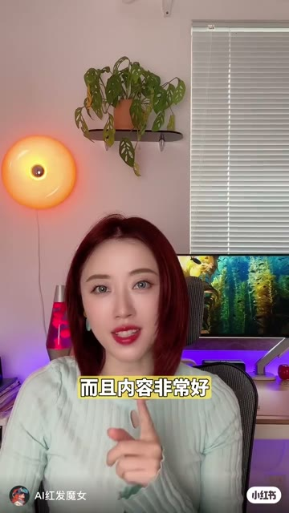
开场声称女性独居 Vlog 两个月涨粉十万、商业合作场景多，随后承诺用 AI 三步复现。观众同时要处理涨粉和制作两个价值承诺。
把提示词交给 AI，要求生成 Vlog 分镜脚本，并为每个分镜提供生图提示词；她还建议多设计场景，方便日后植入产品。
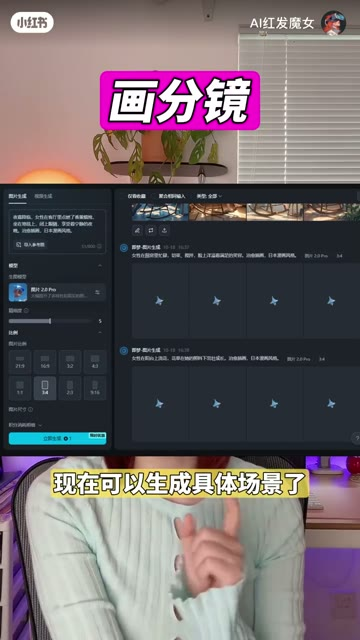
先生成女主角，再用参考图确定风格；生成具体场景时，需要选择参考角色的特征和风格，以保持人物与画面一致。
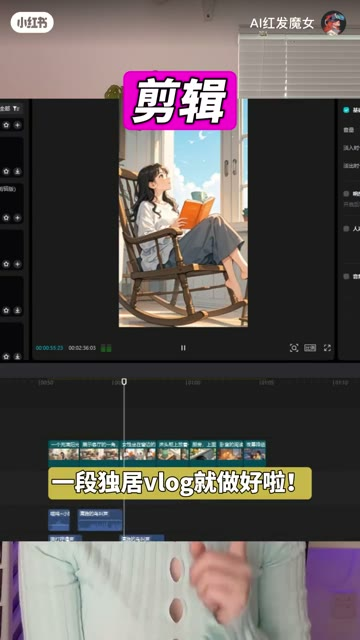
把图片拖入剪辑软件，加入鸟叫、流水等环境音，再补动效、转场和治愈音乐。最终展示成片，并以关注账号收束。
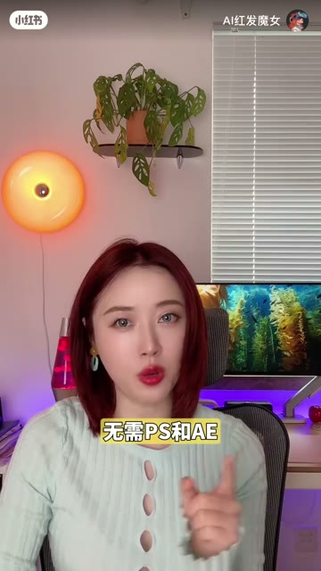
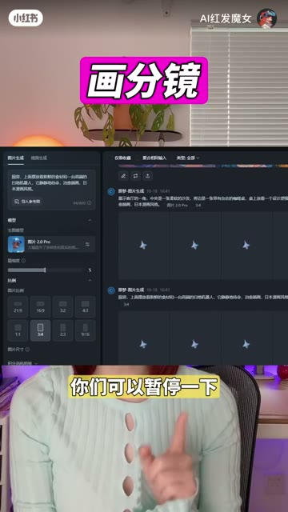
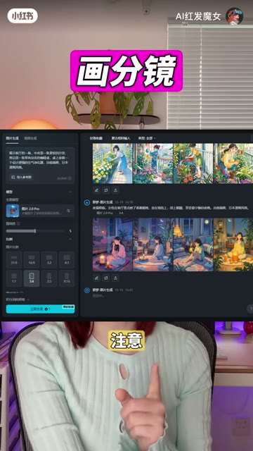
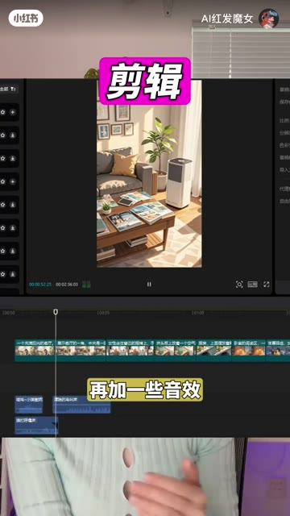
短视频每 1 秒、常规视频每 2 秒、超长视频每 3 秒取一帧。
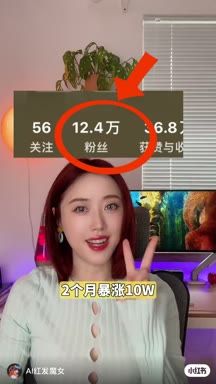
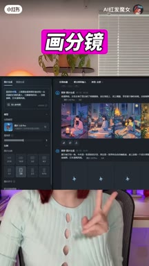
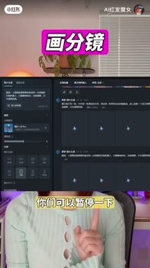
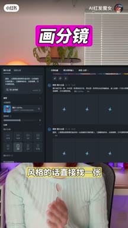
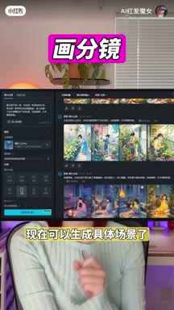
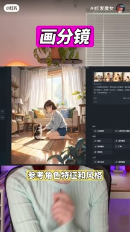
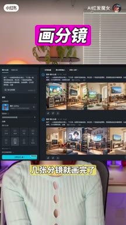
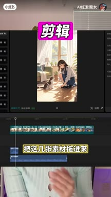
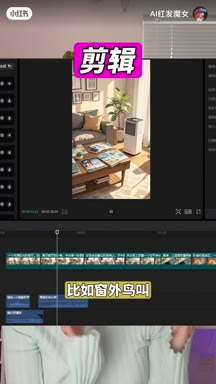
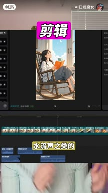
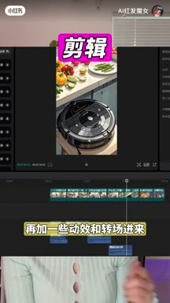
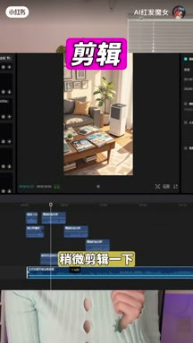
小红书官方 zh-CN 字幕 · 15 段 · 392 字。字幕只记录声音；工具名、界面文字和结果含义必须结合上方视觉知识地图复核。
两个月暴涨十万，这种女性独居的vlog账号真的太吸粉了，而且内容非常好
植入广子合作的场景也会非常的多
今天三步就教你用ai做这样的内容，无需ps和ae有手就行，第一写分镜脚本
我们把这一段提示词喂给ai帮我们写维老本分镜脚本
并且为每一个分镜写生图提示词，尽量让它多设计一些场景
这样合作的时候也更好植入更多的产品，第二画分镜，我们先生成一个人物
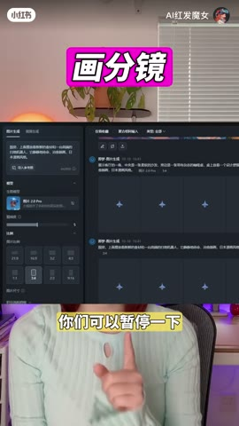
把刚才ai生成的提示词复制过来，你们可以暂停一下，复制我的提示词风格的话
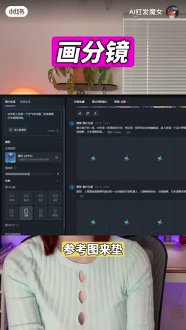
就直接找一张参考图来变好了，我们的女主角出来了
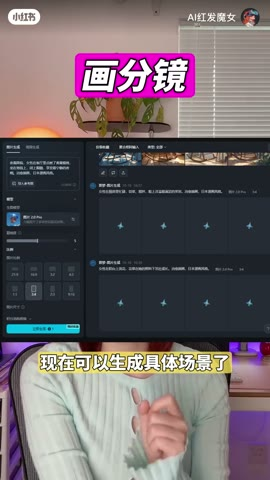
选一张看着顺眼的就它吧，现在就可以生成具体的场景了
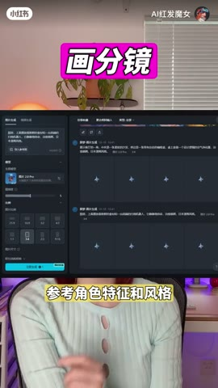
注意这里要选上参考角色的特征和风格
这样就能保持画面一致性，很快啊，几张分镜就画完了
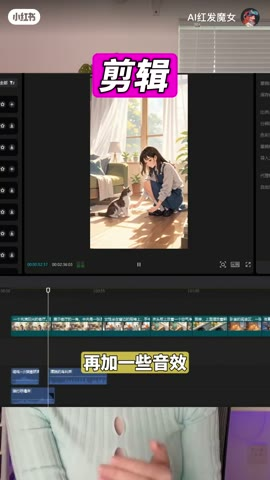
第三剪辑把这几张素材拖进来再加一些音效，比如窗外的鸟叫，刷牙流水声之类的
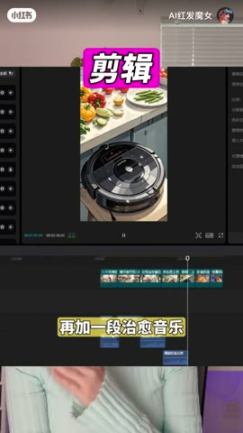
再加一些动效和转场进来，再加一段治愈的音乐，稍微剪辑一下
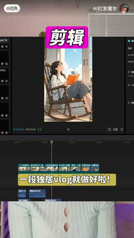
一段辅助vlog就做好啦，一起来看看成片
关注我，每天教你一个ai技能
视频中的涨粉与商业机会属于作者主张，公开页面无法核验对应账号、收入或复现概率。低点赞不等于教程无效，仍缺曝光和留存数据。
打开小红书原帖 ↗